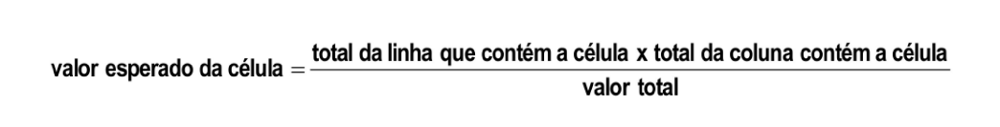

Analise de Correspondencia
Table of Contents
1. vendo nossos dados e introduzindo qui quadrado
O qui quadrado tem um tipo de padronização dos valores pra poder fazer a comparacao
Olhando os dados abaixo, podemos perceber que o total marginal da coluna refrigerante he 140 e do cha 88. Ou seja tem muito mais pessoas que tomam refrigetente que cha.
Por esse motivo fica muito dificil so olhando pra tabela de contigencia comparar 55 com 3 pra dizer que crianças tomam mais regrigerante que cha. Nao parece errado por intuicao mas o 55 ta inflado pelo total marginal muito maior.
O valore esperado de cada celular vai prover um valor pra cada celula e aà sem da pra comparar 55 com o valor esperado da celula e o 3 com o valor esperado da respectiva celular.
Com base nessa base de comparacao a estatistica qui quadrado he construida
../../venv/bin/python3 ../../scripts/data.py head ../../data/exerc_ana_corresp_regrigerante_tabela_contingencia.csv
Abaixo temos a mesma saida so que mostrando os valores esperados
../../venv/bin/python3 ../../scripts/stat_qui2.py --show-expected-values ../../data/exerc_ana_corresp_regrigerante_tabela_contingencia.csv
2. Entendendo o calculo do qui quadrado
2.1. Valor Esperado (Freq Esperada) da Celula

Figure 1: fonte: slides do prof
Na literatura o valor esperado he indicado geralmente por (\(E_{ij}\))
O Livro Hair nao traz formulas porque é mais conceitual, mas explica bem sobre a analise de correspondencia.
Conforme conversamos aqui neste texto um pouco antes o motivo pelo qual se calcula o valor esperado pra cada celular. O livro do Hair explica bem que é o valor esperado que "padroniza" e dá base pra comparacao.
o valor esperado (\(E_{ij}\)) de cada celular, tambem chamado na literatura como frequencia esperada é calculada com a formula abaixo onde as linhas sao indentificadas pelo indice \(i\) e as colunas \(j\) is:
VENV_PATH=$(readlink -f ../../venv/bin/python3) FORMULA=$($VENV_PATH ../../scripts/math_latex.py qui2-expected-values --raw) echo "\[ $FORMULA \]"
\[ E_{ij} = \frac{C_{j} R_{i}}{n} \]
Onde:
- \(R_i\): total da linha que contem a celula Soma das linhas \(i\) (Total Marginal da linha).
- \(C_j\): total da coluna que contem a celula \(j\) (Total Marginal da coluna).
- \(n\): Total Geral
2.2. Estatistica Qui-Quadrado (\(\chi^2\))
A estatistica qui-quadrado total he a soma das contribuições de cada célula:
VENV_PATH=$(readlink -f ../../venv/bin/python3) FORMULA=$($VENV_PATH ../../scripts/math_latex.py qui2-stat --raw) echo "\[ $FORMULA \]"
\[ \chi^{2} = \sum_{\substack{1 \leq i \leq r\\1 \leq j \leq c}} \frac{\left(- E_{ij} + O_{ij}\right)^{2}}{E_{ij}} \]